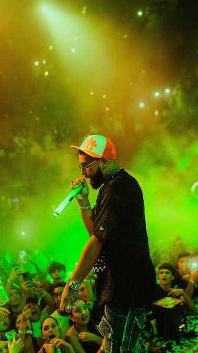
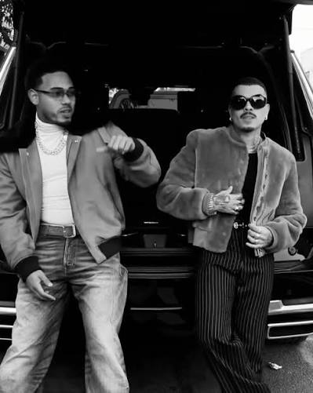
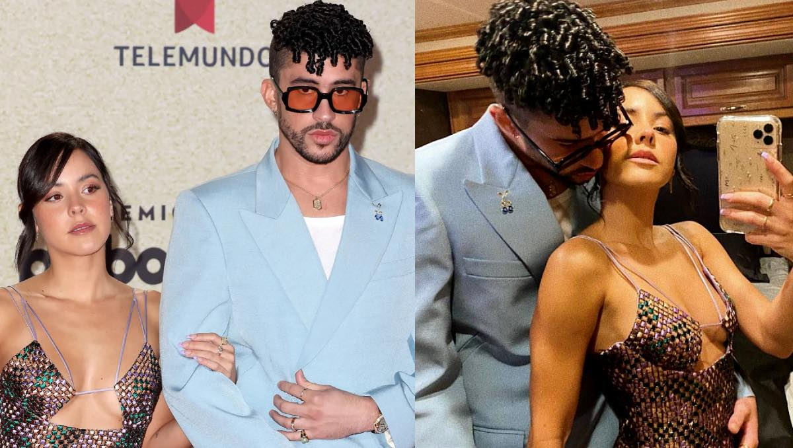

El cantante de reggaeton JC REYES fue visto borracho en un concierto reciente, lo que generó preocupación entre sus fans y la industria musical.
A pesar de su estado, el artista continuó con su presentación, pero algunos asistentes notaron su comportamiento errático y falta de coordinación en el escenario.
La noticia ha generado un debate sobre la responsabilidad de los artistas y la importancia de cuidar su salud y bienestar, especialmente cuando se trata de presentaciones en vivo. Algunos seguidores han expresado su apoyo a JC REYES, mientras que otros han criticado su comportamiento y han pedido que se tomen medidas para evitar situaciones similares en el futuro.
La industria musical ha estado lidiando con problemas relacionados con el consumo de alcohol y drogas entre los artistas, y este incidente ha vuelto a poner el tema en el centro de la conversación. Se espera que JC REYES emita un comunicado para aclarar la situación y abordar las preocupaciones de sus fans y colegas.

Tras varios días alimentando las especulaciones en redes sociales con adelantos visuales y guiños a sus éxitos pasados, el cantante puertorriqueño Myke Towersha confirmado oficialmente su nueva colaboración junto a Rauw Alejandro titulada «Tremendo Desastre», cuyo lanzamiento mundial está programado para este jueves 19 de noviembre.
El anuncio llega después de que ambos artistas publicaran un vídeo en blanco y negro bailando al ritmo de un fragmento inédito bajo la pregunta «¿Repetimos el 2020?», evocando el impacto comercial que lograron hace seis años con temas como «Ponte Pa' Mí» y «La Nota». Con este nuevo junte, dos de los exponentes más influyentes de la escena urbana actual vuelven a unir sus estilos con el objetivo de dominar las listas de reproducción globales en el tramo final del año.

El cantante puertorriqueño Benito Antonio Martínez Ocasio, conocido mundialmente como Bad Bunny, volvió a acaparar los titulares de la prensa de entretenimiento este fin de semana tras ser captado junto a su expareja, la diseñadora y empresaria Gabriela Berlingeri, en la ciudad de Nueva York. Ambos fueron fotografiados mientras salían de un exclusivo restaurante en el vecindario de SoHo antes de abordar juntos una camioneta negra, unas imágenes que se viralizaron rápidamente y desataron una ola de especulaciones entre sus seguidores sobre una possible reconciliación sentimental. Además del reencuentro, el intérprete llamó la atención por estrenar un renovado cambio de imagen al mostrarse completamente sin barba, marcando una nueva etapa estética tras haber cerrado con récords históricos su gira mundial Debí tirar más fotos y haber ganado un premio Emmy por su espectáculo de medio tiempo en la Super Bowl.